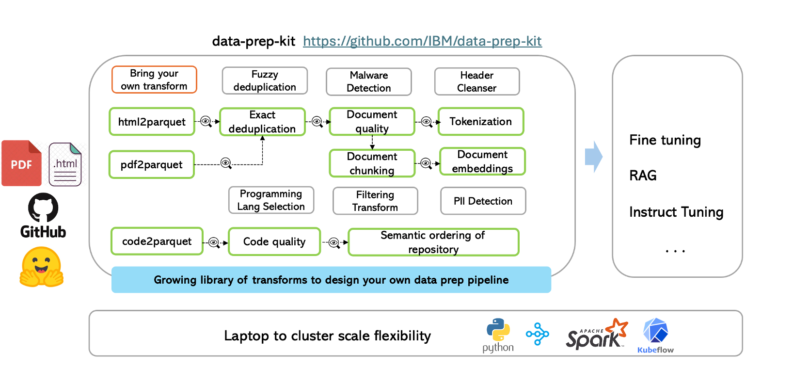

Data Prep Kit for Advanced Users

Add your own transform
At the core of the framework, is a data processing library, that provides a systematic way to implement the data processing modules. The library is python-based and enables the application of "transforms" to a one or more input data files to produce one or more output data files. We use the popular parquet format to store the data (code or language). Every parquet file follows a set schema. A user can use one or more transforms (or modules) as discussed above to process their data. A transform can follow one of the two patterns: annotator or filter.
-
Annotator An annotator transform adds information during the processing by adding one more columns to the parquet files. The annotator design also allows a user to verify the results of the processing before the actual filtering of the data.
-
Filter A filter transform processes the data and outputs the transformed data, e.g., exact deduplication. A general purpose SQL-based filter transform enables a powerful mechanism for identifying columns and rows of interest for downstream processing.
For a new module to be added, a user can pick the right design based on the processing to be applied. More details here.
One can leverage Python-based processing logic and the Data Processing Library to easily build and contribute new transforms. We have provided an example transform that can serve as a template to add new simple transforms. Follow the step by step tutorial to help you add your own new transform.
For a deeper understanding of the library's architecture, its transforms, and available runtimes, we encourage the reader to consult the comprehensive overview document alongside dedicated sections on transforms and runtimes.
Additionally, check out our video tutorial for a visual, example-driven guide on adding custom modules.
💻 -> 🖥️☁️ From laptop to cluster
Data-prep-kit provides the flexibility to transition your projects from proof-of-concept (PoC) stage to full-scale production mode, offering all the necessary tools to run your data transformations at high volume. In this section, we enable you how to run your transforms at scale and how to automate them.
Scaling of Transforms
To enable processing of large data volumes leveraging multi-mode clusters, Ray or Spark wrappers are provided, to readily scale out the Python implementations.
A generalized workflow is shown here.
Automation
The toolkit also supports transform execution automation based on Kubeflow pipelines (KFP), tested on a locally deployed Kind cluster and external OpenShift clusters. There is an automation to create a Kind cluster and deploy all required components on it. The KFP implementation is based on the KubeRay Operator for creating and managing the Ray cluster and KubeRay API server to interact with the KubeRay operator. An additional framework along with several kfp components is used to simplify the pipeline implementation.
A simple transform pipeline tutorial explains the pipeline creation and execution. In addition, if you want to combine several transformers in a single pipeline, you can look at multi-steps pipeline
When you finish working with the cluster, and want to clean up or destroy it. See the clean up the cluster
Using data from HuggingFace
If you wish to download and use real parquet data files from HuggingFace while testing any of the toolkit transforms, use HuggingFace download APIs that provide caching and optimize the download process. Here is an example of the code needed to download a sample file:
```bash !pip install --upgrade huggingface_hub from huggingface_hub import hf_hub_download import pandas as pd
REPO_ID = "HuggingFaceFW/fineweb" FILENAME = "data/CC-MAIN-2013-20/000_00000.parquet"
hf_hub_download(repo_id=REPO_ID, filename=FILENAME, repo_type="dataset") ```
Run your first transform using command line options
You can run transforms via docker image or using virtual environments. This document shows how to run a transform using virtual environment. You can follow this document to run using docker image.